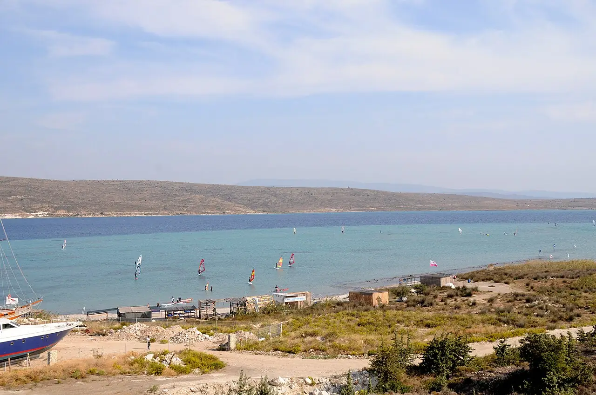

Alaçatı
Çeşme, Turquie · windsurf

Grande baie au sud du village d’Alaçatı, près de Çeşme, où un vent de nord régulier souffle sur une eau plate et peu profonde. C’est la capitale turque du windsurf, avec de nombreuses écoles.
- Lieu
- Çeşme, Turquie
- Niveau
- Variable selon les conditions
- Activités
- windsurf
- Type d'eau
- Mer / océan
- Coordonnées
- 38.25, 26.38 (position approximative du secteur)
Dangers à connaître
- Vent de nord souvent fort, qui pousse vers le large de la baie.
- Partage du plan d’eau avec les écoles et la marina voisine.
Le conseil d'Ocean Buddy
Débutant, reste dans la zone peu profonde près des centres ; les confirmés vont chercher le vent plus fort au large.
Ouvrir dans Ocean Buddy Télécharger sur l'App Store
Source : Fiche Ocean Buddy · septembre 2026 · à vérifier localement.